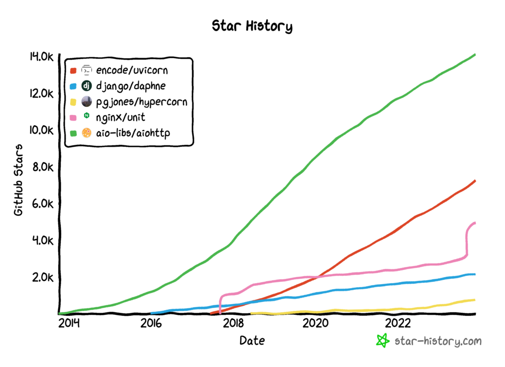
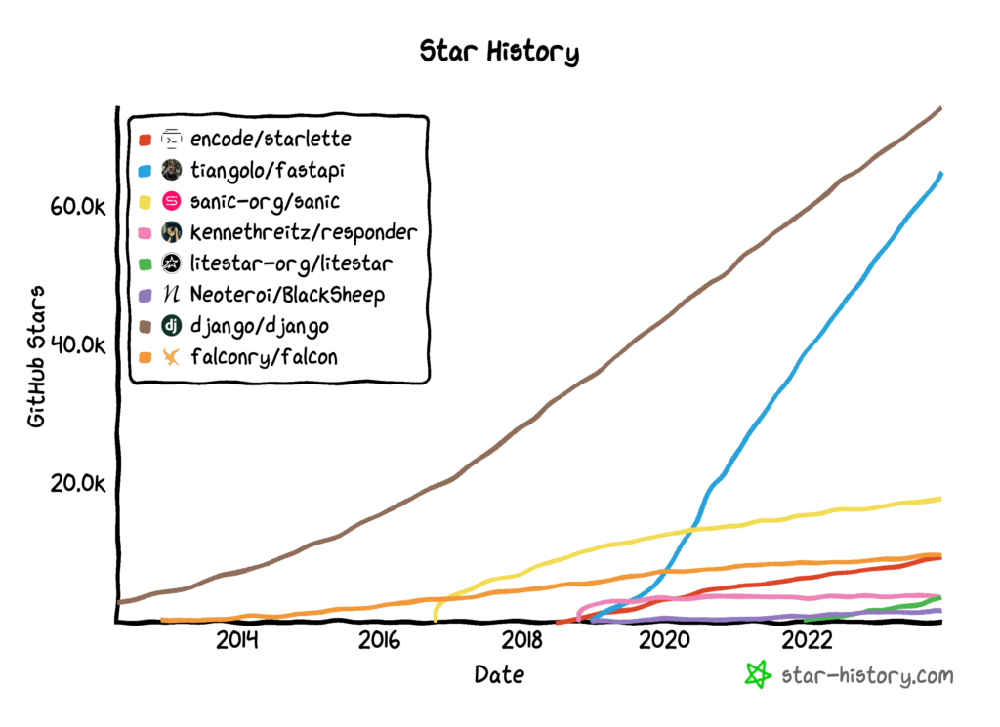
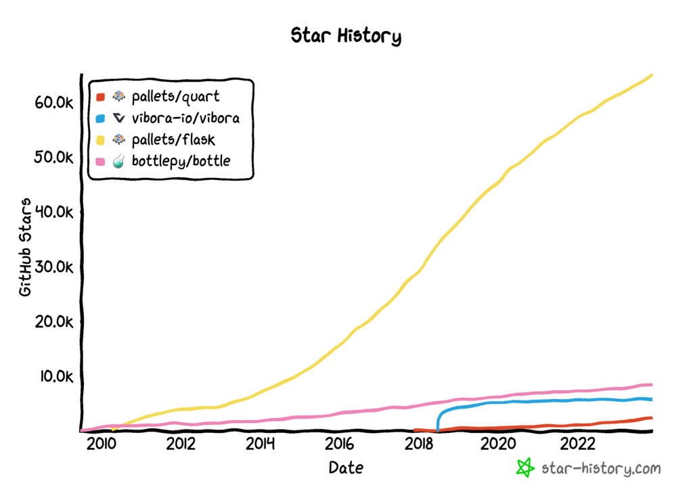

Python Async Web Servers and Frameworks
Asyncio has found a home in Python web development.
Nevertheless, the landscape of async web development is changing fast. It's also confusing because there are very old projects that are described as "asynchronous" and very modern projects that are async-first, leaving the latest fast event loops and language features.
Let's slow things down a bit and take a stroll across the async Python web development landscape and try to get a handle on what's there and how things are related.
In this tutorial, you will discover the landscape of async web development servers and frameworks.
After reading this tutorial, you will know:
- About the ASGI spec that sits between async servers and frameworks.
- Modern async web servers support ASGI and are async first.
- Modern async web frameworks that support ASGI and older WSGI frameworks that have some async support.
- Microframeworks for web development that are async-first and older microframeworks that support async.
Let's get started.
Asyncio + Web Development
Asyncio provides asynchronous programming in Python.
This includes coroutines as first-class citizens in the language (e.g. async/await syntax) and the asyncio module in the standard library.
Web development is perhaps the major use case for asyncio. I'd say "it is the major use case" more definitively, but how do I prove my case?
Async web dev in Python involves using third-party web development frameworks that support asyncio.
In turn, these frameworks require web servers capable of supporting asynchronous programming and modern async web constructs like WebSockets, HTTP long-polling, HTTP/2, and more.
The landscape is confusing, to say the least. Like, super confusing.
This tutorial attempts to lay it all out with an eye on how and where asyncio is supported in modern Python web development.
We're not racing or baking off projects here, we're just learning what they are and where they fit.
Modern async frameworks in Python and servers talk to each other using a spec called ASGI, which we must touch on first. We can use it as a filter to find async-first web servers and frameworks after that.
ASGI: Asynchronous Server Gateway Interface
WSGI or the "Web Server Gateway Interface" defines a standard way for Python web servers and web applications (frameworks) to interact.
It's helpful as it offers interoperability and allows developers to interchange servers and frameworks.
WSGI was thus created as an implementation-neutral interface between web servers and web applications or frameworks to promote common ground for portable web application development.
-- Web Server Gateway Interface, Wikipedia
ASGI or "Asynchronous Server Gateway Interface" is a protocol used in Python for asynchronous web servers.
It's an evolution of the WSGI (Web Server Gateway Interface) commonly used in synchronous Python web frameworks. ASGI is designed to support asynchronous frameworks and applications.
ASGI (Asynchronous Server Gateway Interface) is a spiritual successor to WSGI, intended to provide a standard interface between async-capable Python web servers, frameworks, and applications.
-- ASGI Documentation
ASGI addresses the limitations of WSGI by enabling asynchronous capabilities, allowing web servers to handle long-lived connections, bidirectional communication, and other asynchronous operations more efficiently.
It's particularly well-suited for applications that require real-time functionality, such as chat applications, streaming, or IoT devices.
Because they are asynchronous by design, they almost universally use or support asyncio.
A great resource for ASGI libraries is awesome-asgi maintained by Florimond Manca.
A curated list of awesome ASGI servers, frameworks, apps, libraries, and other resources.
-- awesome-asgi
Another great resource is the Python Wiki list of Web Frameworks for Python. I also like the list of ASGI implementations on the official site.
Now that we are familiar with WSGI and ASGI, let's explore the landscape of popular servers and frameworks.
Note, I said "popular". I tried to find all relevant libs with more than 1,000 GitHub stars, a weak proxy for interest and quality.
Let me know in the comments if I missed one.
Asynchronous Python Web Servers
A Python web server is software that handles incoming HTTP requests from clients, such as web browsers and responds with the requested web content.
It listens for requests on a specific port and communicates using the Hypertext Transfer Protocol (HTTP).
These servers manage the HTTP protocol, parse incoming requests, and route them to the appropriate components to generate the desired response, which could be static content, dynamically generated web pages or API responses.
They are server "applications" and typically sit behind infrastructure that is balancing and feeding raw requests.
Below is a list of some of the more popular ASGI web servers.
- Uvicorn: An ASGI web server, for Python.
- Daphne: Django Channels HTTP/WebSocket server
- Hypercorn: Hypercorn is an ASGI and WSGI Server based on Hyper libraries and inspired by Gunicorn.
These are the big-three ASGI servers.
Some honorable mentions:
- NGINX Unit: universal web app server - a lightweight and versatile open source server
- Aiohttp: Asynchronous HTTP client/server framework for asyncio and Python
We can plot GitHub stars over time to get some idea of the general community interest in each web server project.
Uvicorn is dominant, Aiohttp looks dominant, but it is mainly used for client-side projects. NGINX Unit may be coming for Uvicorn, but is not a pure Python solution which matters to some.

Uvicorn is an async-first ASGI server.
Until recently Python has lacked a minimal low-level server/application interface for async frameworks. The ASGI specification fills this gap, and means we're now able to start building a common set of tooling usable across all async frameworks.
-- Uvicorn GitHub Project.
As its name might suggest, it borrows ideas from Unicorn (Ruby server with master/worker architecture) and is built around the fast third-party drop-in replacement event loop for asyncio called UvLoop.
https://en.wikipedia.org/wiki/Unicorn_(web_server)
https://github.com/MagicStack/uvloop
Uvicorn is quickly becoming the preferred server as part of the FastAPI stack (Uvloop + Uvicorn + Starlette + FastAPI). The rapid rise in the adoption of FastAPI (discussed below) is lifting the popularity of all projects.
Daphne comes from the Django universe and was the first real ASGI-compatible server, aside from the reference implementation.
Daphne is a HTTP, HTTP2 and WebSocket protocol server for ASGI and ASGI-HTTP, developed to power Django Channels.
-- Daphne GitHub Project.
As such, it is preferred in the Django ecosystem and sees wide adoption because of this.
The first ASGI server implementation, originally developed to power Django Channels, is the Daphne webserver. It is run widely in production, and supports HTTP/1.1, HTTP/2, and WebSockets.
-- Uvicorn GitHub Project.
Hypercorn is the third of the big three ASGI servers recommended by most ASGI frameworks.
Hypercorn is an ASGI and WSGI web server based on the sans-io hyper, h11, h2, and wsproto libraries and inspired by Gunicorn. Hypercorn supports HTTP/1, HTTP/2, WebSockets (over HTTP/1 and HTTP/2), ASGI, and WSGI specifications. Hypercorn can utilise asyncio, uvloop, or trio worker types.
-- Hypercorn GitHub Project.
NGINX Unit is a web server, although it is not Python-native.
NGINX Unit is a lightweight and versatile open-source server that has two primary capabilities: serves static media assets, runs application code in seven languages.
-- NGINX Unit GitHub Project.
It does support Python and the ASGI spec, so I've included it as an honorable mention.
Supported App Languages - Python: by using WSGI or ASGI with WebSocket support.
-- Key Features, NGINX Unit Documentation
Aiohttp provides an async-first HTTP client and server.
Async http client/server framework. Supports both client and server side of HTTP protocol. Supports both client and server Web-Sockets out-of-the-box and avoids Callback Hell. Provides Web-server with middleware and pluggable routing.
-- aiohttp GitHub Project.
It is mainly used for its HTTP client in API libraries for remote calls. Nevertheless, it has a server that is used in production.
I've included it as an honorable mention. I chose to list it here with the servers instead of the web microframeworks below because it is lower level than a framework.
What About Tornado and Twisted?
Stop everything (I hear you say).
What about Tornado?
What about Twisted?
Chill. They don't really fit here.
Tornado
Tornado is a network programming library and web framework.
It uses an asynchronous programming model and supports non-blocking I/O.
Tornado is a Python web framework and asynchronous networking library, originally developed at FriendFeed. By using non-blocking network I/O, Tornado can scale to tens of thousands of open connections, making it ideal for long polling, WebSockets, and other applications that require a long-lived connection to each user.
-- tornado, GitHub Project.
It is an older project (2009), originally developed for FriendFeed which became a part of FaceBook (2009).
As such, it pre-dates the WSGI standard for Python web servers and the more modern ASGI standard for asynchronous Python web servers.
Tornado is different from most Python web frameworks. It is not based on WSGI, and it is typically run with only one thread per process.
-- Tornado Documentation
Nevertheless, modern Tornado works with asyncio in the standard library.
It originally supported its own implementation of coroutines (decorated coroutines), although now supports coroutines provided in modern Python via the "async def" and "await" expressions (native coroutines).
Tornado is integrated with the standard library asyncio module and shares the same event loop (by default since Tornado 5.0). In general, libraries designed for use with asyncio can be mixed freely with Tornado.
-- Tornado Documentation
Tornado is an async web server and we can develop views with coroutines. It's great, it's async-first, it's legacy for this discussion.
Twisted
Twisted is also a network programming library.
It offers a web server, but this is not the main focus, as it offers an implementation for a suite of protocols and tools for developing custom application protocols.
Twisted makes it easy to implement custom network applications.
-- Twisted Homepage
It uses an event-driven model with the reactor pattern (event loop).
Twisted is an event-based framework for internet applications, supporting Python 3.6+. It includes modules for many different purposes ...
-- Twisted, GitHub Project.
Central to Twisted is the ideal of asynchronous programming via callback functions, e.g. "callback-based programming".
The callback approach to programming can be frustrating, and in large systems, the difficulty in tracing execution is referred to as "callback hell".
The situation where callbacks are nested within other callbacks several levels deep, potentially making it difficult to understand and maintain the code.
-- callback hell, Wiktionary.
Twisted is also an older library, much older, developed initially in 2002.
As such, it is a trailblazer, defining "asynchronous programming" in Python long before it became popular and long before it became a standard for modern web development.
It inspired many frameworks that came after. The asyncio project, before it was integrated into the standard library, directly calls out Twisted as an inspiration for its transport and protocol abstractions.
Here is a more detailed list of the package contents: [...] transport and protocol abstractions (similar to those in Twisted);
-- Asyncio Wiki Home, Python Asyncio Project
Here, asynchronous programming is achieved using events and callback functions. The focus is on defining and developing application protocols.
Given its age and approach, it does not collaborate with modern asyncio in the standard library. It does not support ASGI.
However, Daphne is claimed to be written using Twisted:
Daphne: The current ASGI reference server, written in Twisted and maintained as part of the Django Channels project. Supports HTTP/1, HTTP/2, and WebSockets.
-- Implementations, ASGI website.
Twisted was the only way to approach network programming with asynchronous programming in Python for a long time. As such many popular platforms and applications used it over the years on the client and server side.
Twisted can be used as an async web server. It's also great, it's async-first in a different way, it's also legacy for this discussion.
On to ASGI-compatible Python web frameworks.
Asynchronous Python Web Frameworks
A Python web framework is a comprehensive software package that provides the necessary tools, libraries, and structure for building web applications.
They typically include functionalities like routing requests, handling HTTP responses, managing databases, providing templating systems, and security measures, and often follow the Model-View-Controller (MVC) or similar design patterns.
Python web frameworks streamline the development process by offering pre-built components and best practices, enabling developers to focus more on application logic and less on low-level implementation details.
Many modern async web frameworks are focused on serving API endpoints, rather than websites.
ASGI Web Frameworks
Below is a list of some of the more popular ASGI web frameworks.
Most of these frameworks are not standalone, meaning they require a web server.
They are also focused on API endpoints, not serving web pages to browsers.
- Starlette: The little ASGI framework that shines.
- FastAPI: FastAPI framework, high performance, easy to learn, fast to code, ready for production
- Sanic: Accelerate your web app development
- Responder: A familiar HTTP Service Framework for Python.
- Litestar: Production-ready, Light, Flexible and Extensible ASGI API framework
- BlackSheep: Fast ASGI web framework for Python
We can plot GitHub stars over time to get some idea of the general community interest in each web framework project.

Starlette is neither a web server nor a web framework. It sits in between the server and framework and provides tools to make developing web frameworks simpler.
Starlette is a lightweight ASGI framework/toolkit, which is ideal for building async web services in Python.
-- Starlette GitHub Project.
It is ASGI compatible and recommends a server project such as Uvicorn, Daphne, or Hypercorn.
It is used for frameworks such as FastAPI and Responder.
FastAPI is an async-first web framework, used primarily for API endpoints.
FastAPI is a modern, fast (high-performance), web framework for building APIs with Python 3.8+ based on standard Python type hints.
-- FasAPI GitHub Project.
It is built on top of the Starlette ASGI toolkit and requires an ASGI web server, such as Uvicorn or Hypercorn.
Interestingly, views are defined using either functions or coroutines.
Sanic is an async-first web server and web framework. This means it is an all-in-one solution, a full stack.
Sanic is a Python 3.8+ web server and web framework that's written to go fast. It allows the usage of the async/await syntax added in Python 3.5, which makes your code non-blocking and speedy.
-- Sanic GitHub Project.
Nevertheless, it can be used as a web framework and run with a high-performance ASGI server such as Daphne, Uvicorn, and Hypercorn.
Watchout Django, FastAPI is coming!
Django
Django needs its own section.
- Django: The Web framework for perfectionists with deadlines.
I'd classify it as a WSGI web framework with async support. This is true, but also not true (see Django Channels below).
Django is the granddaddy for Python web development. It's been around forever and is widely adopted for Python webdev.
Django is a high-level Python web framework that encourages rapid development and clean, pragmatic design.
-- Django GitHub Project
Django is a high-level Python web framework known for its batteries-included approach, facilitating rapid development and pragmatic design.
Its primary use case is building robust, scalable, and secure web applications. Django excels in creating feature-rich web applications, from content management systems (CMS) and social networks to e-commerce platforms and data-driven websites.
It's mostly used to develop websites.
Modern Django can be run on an ASGI server such as Uvicorn, Daphne, or Hypercorn.
As well as WSGI, Django also supports deploying on ASGI, the emerging Python standard for asynchronous web servers and applications.
-- How to deploy with ASGI, Django Documentation.
Views in Django can be defined as coroutines with the async/await syntax.
Django has support for writing asynchronous (“async”) views, along with an entirely async-enabled request stack if you are running under ASGI.
-- Asynchronous support, Django Documentation.
The dominance of Django sparked the need for ASGI.
Specifically, the Django Channels project.
Channels is a project that takes Django and extends its abilities beyond HTTP - to handle WebSockets, chat protocols, IoT protocols, and more. It’s built on a Python specification called ASGI. Channels builds upon the native ASGI support in Django. Whilst Django still handles traditional HTTP, Channels gives you the choice to handle other connections in either a synchronous or asynchronous style.
-- Django Channels.
This includes a reference implementation of the ASGI spec called asgiref, the Daphne server (discussed above) and Django Channels.
Django Channels adds support to the Django Framework for modern async web dev capabilities, such as WebSockets and HTTP long-polling. It requires an ASGI server, ideally Daphne which was developed for the purpose.
I would then argue that Django + Django Channels + Daphne (is!?) closely approaches an ASGI solution. The decades of legacy make me nervous about this claim. Django experts will probably box my ears (correct me in the comments).
- asgiref: ASGI specification and utilities
- Django Channels: Developer-friendly asynchrony for Django
- Daphne: Django Channels HTTP/WebSocket server
WSGI Web Frameworks With Async Support
WSGI are modern Python web frameworks developed before the asynchronous programming wave.
Most of the popular frameworks support asynchronous programming in some form, such as the definition of views via coroutines and/or support for ASGI. Nevertheless, they are not async-first projects and may suffer in terms of performance or architecture design decisions as a result.
These are web frameworks that are WSGI, but support some form of asynchronous programming.
- Falcon: The no-magic web data plane API and microservices framework for Python developers, with a focus on reliability, correctness, and performance at scale.
- Hug: Embrace the APIs of the future. Hug aims to make developing APIs as simple as possible, but no simpler.
Falcon is a popular WSGI web development framework, typically used with the Gunicorn server.
It does support views defined as coroutines via the async/await syntax.
Native asyncio support
-- Falcon GitHub Project.
Falcon can support ASGI via an appropriate underlying server, such as Uvicorn.
In order to serve a Falcon ASGI app, you will need an ASGI server. Uvicorn is a popular choice.
-- Falcon GitHub Project.
Hug is intended for developing web-based APIs. It is designed to run on top of a WSGI server, although it does support views to be defined as coroutines.
Hug is running on top Falcon which is not an asynchronous server. Even if using asyncio, requests will still be processed synchronously.
-- Hug GitHub Project.
Asynchronous Python Web Microframeworks
A Python web microframework is a lightweight, minimalistic web framework designed to handle the basics of web development without the overhead of full-fledged frameworks.
They typically provide essential tools for building web applications, like routing HTTP requests to specific functions, handling HTTP responses, and managing some level of abstraction for handling HTTP requests, but tend to be less opinionated and include fewer features than full-stack frameworks.
Microframeworks allow developers to build simple web applications quickly and with more flexibility, often leaving the choice of additional libraries and components to the developer.

ASGI Web Microframeworks
Below is a list of some of the more popular ASGI web microframeworks.
These frameworks often include a web server and are not intended for use at scale.
- Quart: An async Python micro framework for building web applications.
- Vibora: Fast, asynchronous and elegant Python web framework.
Quart is an ASGI successor to the extremely popular Flask web microframework.
Views are written using coroutines via "async def" expressions.
Unless Flask explores an ASGI rewrite, Quart is probably the future of Flask.
Quart is an asyncio reimplementation of the popular Flask microframework API. This means that if you understand Flask you understand Quart.
-- Quart GitHub Project.
Vibora is another popular web microframework that is async-first.
Like Quart, views are defined as coroutines. I assume it implements the ASGI spec, but the documentation does not spell this out.
At the time of writing, the framework appears to be undergoing a major rewrite. Concerning for sure.
This repository has been archived by the owner on Oct 9, 2023. It is now read-only.
-- Vibora GitHub Project.
WSGI Web Microframeworks With Async Support
These are web microframeworks that are WSGI, but support some form of asynchronous programming.
- flask: The Python micro framework for building web applications.
- bottle: bottle.py is a fast and simple micro-framework for python web-applications.
Flask is a WSGI, but supports coroutines for views via async/await expressions in Python.
Flask, as a WSGI application, uses one worker to handle one request/response cycle. When a request comes in to an async view, Flask will start an event loop in a thread, run the view function there, then return the result.
-- Using async and await, Flask Documentation.
Bottle is a WSGI, but supports asynchronous programming via gevent.
Bottle is a WSGI framework and shares the synchronous nature of WSGI, but thanks to the awesome gevent project, it is still possible to write asynchronous applications with bottle
-- Primer to Asynchronous Applications, Bottle Documentation.
Takeaways
You now know about the landscape of async web servers and frameworks in Python.
If you enjoyed this tutorial, you will love my book: Python Asyncio Jump-Start. It covers everything you need to master the topic with hands-on examples and clear explanations.